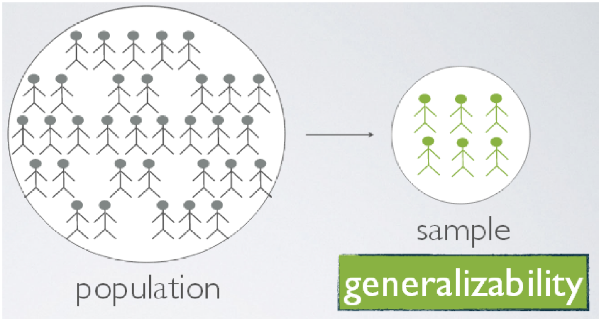
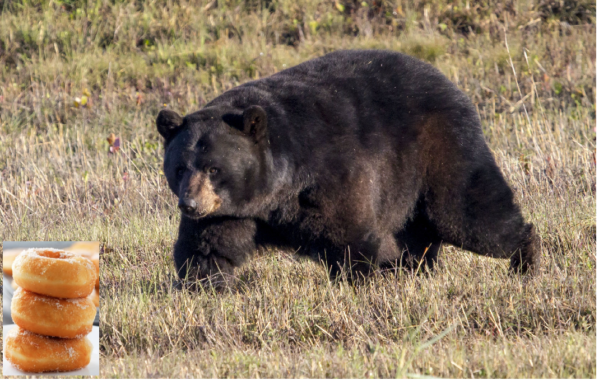
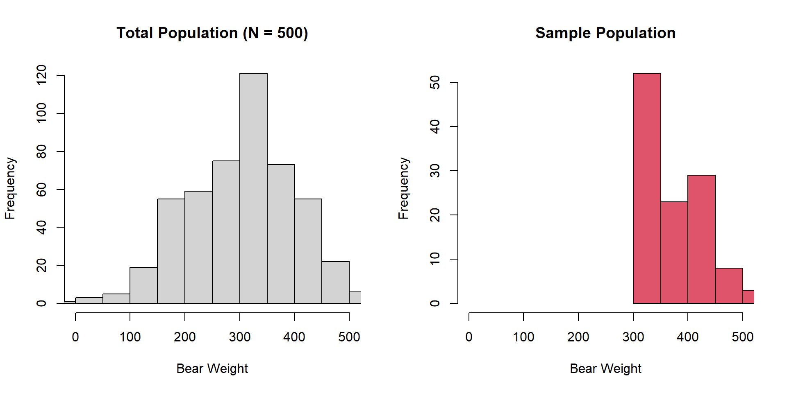
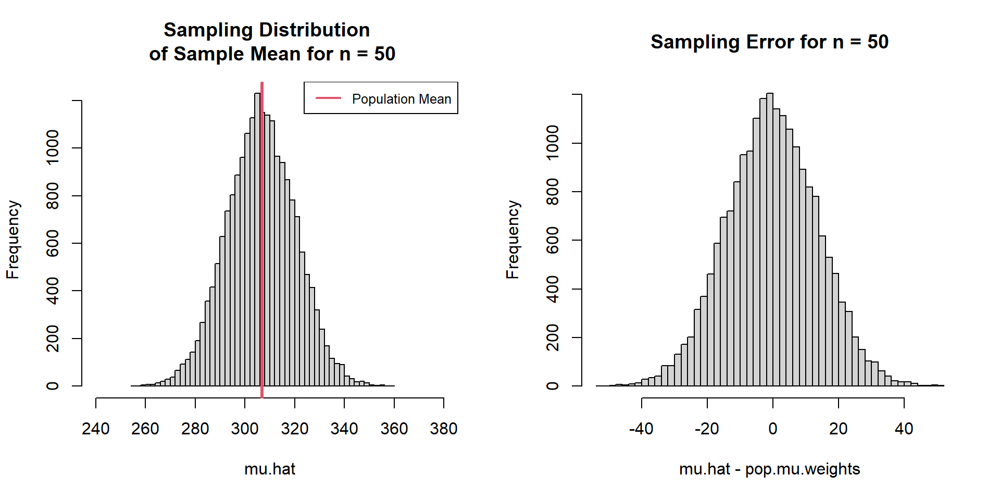
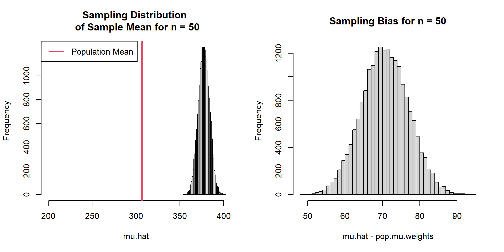
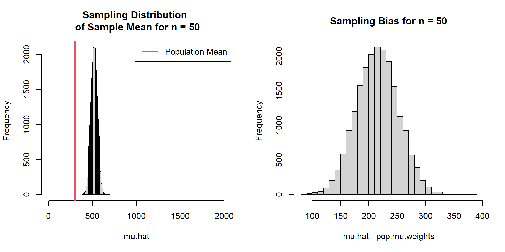

Design vs. Sampling
What is it called to use characteristics of sa mple to describe a ‘population’?
Design vs. Sampling
- Experimental Design:
- Deliberately perturbing a part of a ‘population’ to compare it’s effect to a part that was not perturbed
- Sampling Design: The process of obtaining a representative sample to characterize a ‘population’ w/o necessarily perturbing it.
Sample Language
A sample:
\(\textbf{y} = [1, 6, 3, 5, 2, 1]\)
A sample unit:
\(y_{2} =6\)
Sample size:
\(n = 6\)
Common Sample Units
- plots/quadrats - small geographic area to measure/count plants, seeds, insects, etc.
- points - measurements are taken from a set of points established thourghout a population
- transects - straight-line segments
- individual organisms - the ornganism is the sample unit or the organism defines the location of the sample unit
More Language
What is a statistic?
- An estimate of a population parameter from a sample
\[\mu =\left(\sum_{i=1}^{N}y_{i}\right)\times \frac{1}{N} = 4\]
- \(\mu\) is a population parameter (measure of central tendency)
- \(N\) is a population parameter (size of all possible sample units)
- \(4\) is the value of the population parameter
More Language
\[\hat{\mu} = \left(\sum_{i=1}^{n}y_{i}\right)\times \frac{1}{n} = 4.1\]
- \(n\) is a sample parameter (size of sample)
- \(\hat{\mu}\) is an estimate of a population parameter from the estimator (mathematical rule for calculation)
- 4.1 is a statistic (specific value)
Sampling Error
- Sampling Error
- The difference b/w a sample statistic (specific value) and the true population value
- 4.1 - 4 = 0.1 sampling error
- Due solely to incomplete enumeration of the population (chance)
- Protection against this is large sample size
Sampling Bias
- Sampling Bias
- Systematic tendency of selecting certain sample units / makes the sample unrepresentative to the target population
- Examples in fish/wildlife??
Sampling Error and Bias
Target Population: Weight of all black bears in a region
Sampling Error and Bias
Sample Population: Weight of harvested black bears in a region that allows food provisioning

Sampling Error and Bias

Sampling Error
Extract population parameters / No Sample Bias
#Population mean
pop.mu.weights = mean(pop.weights)
#Population standard deviation
pop.sd.weights = sd(pop.weights)
# Sample Size
N = length(pop.weights)
Sampling Error
Sampling Error
# Sample Size
n = 50
# Sample and estimate mean one time
sample.1 = mean(sample(pop.weights,n))
# Calculate Sampling Error
sample.1 - pop.mu.weights
Is this a problem?
Sampling Error
Calculate many many sample means

Sampling Bias
We only sample harvest bears with food supplementation
Expected Bias
Biased Estimator
We sample all bears but use a different estimator for the population mean
\[
\hat{\mu} = \left(\sum_{i=1}^{n}\frac{(y_{i})^{0.91}}{1.3}\right)\times \frac{1}{n^{1/2}}
\]
Biased Estimator
Expected Bias